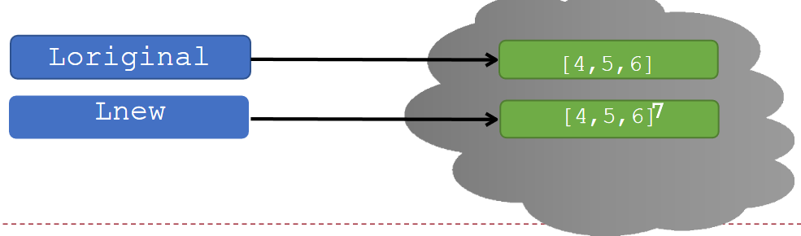
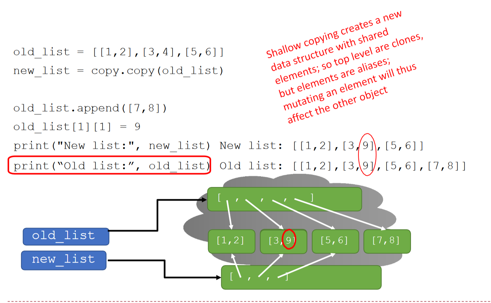
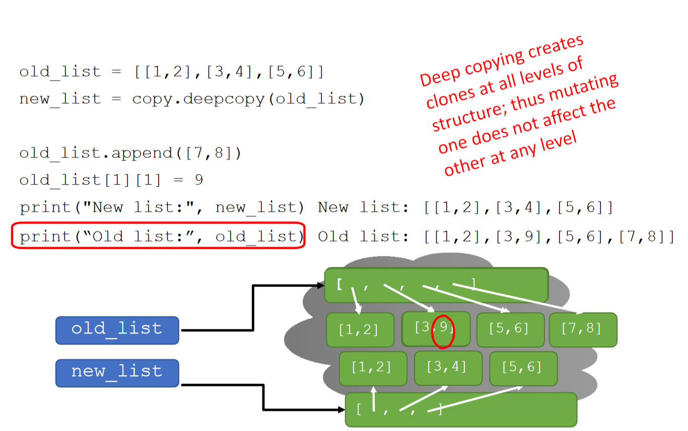

<p style="font-size: 16px; color: #999; margin:5px; position: absolute;"><a href="..">Homepage</a> | <a href="?print-pdf">Printable Version</a></p> <div style="display: flex; justify-content: center; align-items: center; height: 700px;"> <div style="text-align: center; padding: 40px; background-color: white; border: 2px solid rgb(0, 63, 163); border-radius: 20px; box-shadow: 0 0 20px rgba(0,0,0,0.1);"> <h1 style="font-size: 48px; font-weight: bold; margin-bottom: 20px; color: #333;">SI100B Fall 2026 Recitation 4</h1> <p style="font-size: 24px; color: #666;">HW2；Lec07 & Lec08 回顾</p> <p style="font-size: 16px; color: #999; margin-top: 20px; margin-bottom:5px">SI100B 2026 Staff</p> </div> </div> <!--s--> ## Homework 2 - 已发布；**截止：2026 年 10 月 20 日 21:00**。 - **Q1 / Q2：函数基础、库存管理** - 只提交要求的函数定义，不调用 `input()`，不保留测试代码。 - **Q3 / Q4：打印站模拟、自动售货机** - 提交完整程序，严格按照题面要求处理输入和输出。 - 请参考 **26 Fall HW2** 的题面与样例，注意本学期的接口和规则。 <!--s--> <div class="middle center"><div style="width: 100%"> # Functions as Objects </div></div> <!--v--> ## Functions as Objects - 回顾：“Python 中，函数是一等公民” - 函数可以像其他数据类型一样被传递、赋值和使用 - 示例：灵活折扣系统 - 定义主函数`apply_discount(price, discount_strategy)` - `discount_strategy`是一个函数，计算折扣金额 <!--v--> ### Example: Discount Strategy System ```py def apply_discount(price, discount_strategy): discount = discount_strategy(price) final_price = price - discount return final_price # 定义一些折扣策略函数 def fixed_discount(price): """固定折扣 - 减 10 元""" return 10 def bulk_discount(price): """批量折扣 - 满 100 打 8 折，否则 9 折""" if price > 100: return price * 0.2 # 20% 折扣 return price * 0.1 # 10% 折扣 ``` - Lambda function 是什么？ <!--v--> ## Lambda 表达式：随拿随用的“函数” 假设你正在写代码，需要一个非常简单的函数，比如计算一个数的平方。这个函数你可能只会在这里用一次，之后就再也用不到了。 按照常规方法，你会这样做： ```python def square(x): return x * x # 然后在需要的地方调用 result = square(5) print(result) # 输出 25 ``` 但是这很“小题大做” <!--v--> ## Lambda 表达式的特点 **Lambda 表达式**允许我们创建**匿名的、小型的、单行的函数** - **匿名 (Anonymous) 函数：**没有正式名字，不像 `def` 定义的函数那样必须命名 - **小型 (Small)：**设计用来执行简单任务，通常只有一行 - **表达式 (Expression)：**Lambda 本身是一个**表达式**，而不是一个语句 - 可以作为对象操作：可以在一个列表里定义它，或者作为参数传递给另一个函数，等等 - 注：由于使用形式与函数类似（如在括号内写参数），其有时也被俗称为“Lambda 函数”，但请注意其本质仍然是表达式 <!--v--> ## Lambda 表达式语法 ```python lambda arguments: expression ``` **`arguments`:** 参数列表，和`def`函数定义中括号里的参数一样。 - **没有参数**: `lambda: "Hello, World!"` - **一个参数**: `lambda x: x + 10` - **多个参数**: 用逗号`,`隔开，如 `lambda a, b: a * b` - 支持一般函数 (`def`) 所支持的参数形式： - **默认参数：** `lambda x, y=10: x + y` - **可变参数：** `lambda *args: sum(args)` **`expression`:** 表达式；其计算结果是**此 lambda 表达式的返回值**（即自带 `return` 效果） - 不需要也不能显式地写 `return` 关键字 <!--v--> ## Lambda 表达式的例子 - **常规函数:** ```python def add(x, y): return x + y ``` - **等效的 Lambda 表达式:** ```python add_lambda = lambda x, y: x + y # 调用方式完全一样 print(add(3, 5)) # 输出 8 print(add_lambda(3, 5)) # 输出 8 ``` <!--v--> ### 回到原来的使用示例 ```py original_price = 150.0 # 固定折扣 apply_discount(original_price, fixed_discount) # 进行的计算：150.0 - 10 # 批量折扣 apply_discount(original_price, bulk_discount) # 150.0 - 150.0 * 0.2 # 也可以直接使用 lambda 表达式…… apply_discount(original_price, lambda p: p * 0.15) # 15% 折扣 ``` <!--s--> <div class="middle center"><div style="width: 100%"> # Tuple </div></div> <!--v--> ## Tuples（元组） - 一种新的复合数据类型 - 不可变（immutable） - 用圆括号`()`表示 - 支持索引、切片、合并、长度、最大/最小值等操作 **Tuples 操作示例** ```python tuple_empty = () # 空元组 tuple_short = (2,) # 单元素元组需加逗号 hello_tuple = (2, "stu", 3) hello_tuple[0] # 2 hello_tuple[1:3] # ("stu", 3) ``` <!--v--> ## 4. 解包与多值返回 元组非常适合用于**变量交换**和**多返回值**函数。 - **变量交换：** `(x, y) = (y, x)` （无需额外借助 `temp` 变量） - **返回多个值：** ```python def quotient_and_remainder(x, y): return (x // y, x % y) (quot, rem) = quotient_and_remainder(5, 2) ``` - **可变参数 `*args`** ```python def mean(*args): tot = 0 for a in args: tot += a return tot / len(args) if len(args) > 0 else 0 print("计算平均值:", mean(1, 2, 3, 4, 5, 6)) ``` <!--s--> <div class="middle center"><div style="width: 100%"> # List </div></div> <!--v--> ## List (列表) - 可变（mutable）序列 - 用方括号`[]`表示 - 可包含任意类型元素 - 支持索引、切片、合并、迭代等操作 ```python empty_list = [] hello_list = [2, "a", 4, [1, 2]] hello_list[0] # 2 hello_list[3] # [1, 2] [1, 2] + [3, 4] # [1, 2, 3, 4] ``` <!--v--> ## 常用的 List 的方法 - `append(element)`：在末尾添加元素；无返回值 (`None`) - `sort()`：原地对元素进行排序；无返回值 (`None`) - 默认正序；加上可选参数 `reverse=True`为倒序 - 可指定要参照哪个关键字进行排序；详情查阅 Python 手册 - `reverse()`：原地反向排列元素；无返回值 (`None`) - `sorted(list)`：返回新排序的列表；**不修改原列表** **“原地”/“就地”**：对对象本身进行修改 <!--v--> ## Lists 与函数 可传递列表给函数，函数内可修改原列表（副作用） 示例：平方列表中所有元素 ```python def square_list(L): for i in range(len(L)): L[i] = L[i] ** 2 ``` <!--v--> ## 字符串与列表互转 字符串转列表： - `list(s)`：每个字符作为元素 - `s.split(char)`：以字符 `char` 作为分隔符，进行分割 列表转字符串： - `'_'.join(L)`：用指定字符连接 - `''.join(L)`：将列表中的所有元素连成一整个字符串 <!--s--> <div class="middle center"><div style="width: 100%"> # 四、迭代时的修改隐患 </div></div> <!--v--> ## 1. 危险的操作：边迭代边修改 一个非常常见的错误是：在使用 `for` 循环遍历列表时，同时对其进行 `remove` 或 `append`。 ### 思考题：移除所有指定的元素 尝试写一个函数 `remove_all(L, e)` 移除列表中所有的 `e`： ```python # 错误做法！ def remove_all(L, e): for elem in L: if elem == e: L.remove(e) L = [1, 2, 2, 2] remove_all(L, 2) print(L) # 结果竟是 [1, 2]！ ``` <!--v--> ## 2. 为什么会失败？ - Python使用内部计数器跟踪循环的索引。 - 当你移除一个元素时，剩余元素会向左移动填补空缺。 - 但Python**不会**把内部计数器退回一步。 - 结果就是，循环会“跳过”被移到刚刚空缺位置的那个元素！ *正确的做法是使用 `while` 循环，或者遍历列表的副本（比如 `for elem in L[:]`）。* ```python def remove_all(L, e): while e in L: L.remove(e) # 或者 def remove_all(L, e): for elem in L[:]: # 遍历副本 if elem == e: L.remove(e) ``` <!--v--> ## 3. 边迭代边修改的陷阱举例 **无限循环：** ```python L = [1, 2, 3, 4] for e in L: L.append(0) print("这将导致无限循环，因为 L 不断增长，迭代不会结束") ``` 由于循环直接跟随着列表元素的增加，它永远也达不到终点，造成死循环！ ```python # range 循环 (安全) L_range = [1, 2, 3, 4] for i in range(len(L_range)): L_range.append(i) print("range循环结果:", L_range) ``` <!--s--> <div class="middle center"><div style="width: 100%"> # Aliasing & Cloning (Copying) </div></div> <!--v--> ## 1. 内存中的对象 在Python中，修改操作是原地发生的，而赋值可能会创建新对象。 使用 `id(L)` 可以查看对象在内存中的地址。 * `L.append(8)`：`L` 的内存地址不变（可变性）。 * `L = L + [8]`：`L` 指向了一个**全新**的对象。 ```python L = [1, 2, 3] print(id(L)) # 假设输出 140123456789000 L.append(8) print(id(L)) # 仍然输出 140123456789000 L = L + [8] print(id(L)) # 输出一个新的地址，如 140123456789500 ``` <!--v--> ## 为什么需要 Copy？ - 赋值语句只是为一个对象**另起**了一个名字（aliasing） - 对于自身可变的对象，会使目标和对象同时改变 - 许多情况下会导致意外修改 ```py l1 = [1, 2, 3] l2 = l1 l2.append(4) print(l2) # [1, 2, 3, 4] modified print(l1) # [1, 2, 3, 4] ``` <!--v--> ### 回顾：函数传入可变对象 - 场景：函数可能对传入的参数进行修改 - 若传入了可变对象，函数对参数进行的修改将直接影响其原始对象 ```py def foo(l2): print("Id of l2 before revised:", id(l2)) l2.append(4) print("Id of l2 after revised:", id(l2)) # same l1 = [1, 2, 3] print("Id of l1:", id(l1)) foo(l1) print(l1) # [1, 2, 3, 4] ``` <!--v--> ## 对一个列表进行 Copy 改变生成的副本不会影响原始对象 `l2 = l1[:]`，或 `import copy` 后 `l2 = copy.copy(l1)` - 等价于：创建空列表 `l2` - 遍历 `l1`，将 `l1` 的每个元素依次 `append` 进 `l2` ```py[] l1 = [4, 5, 6] l2 = l1[:] l2.append(7) print(l2) # [4, 5, 6, 7] print(l1) # [4, 5, 6] ``` <p></p> <!--v--> ## 有嵌套的可变对象：避免 Shallow Copy - 上述 `l2 = l1[:]` 和 `l2 = copy.copy(l1)` 都属于浅拷贝（Shallow Copy） - 浅拷贝 **仅拷贝嵌套的第一层** ，第二层或更深（例如其中的可变对象）不会被拷贝 <p></p> <!--v--> ## 有嵌套的可变对象：Deep Copy - 当嵌套结构中的元素可能是可变对象时，使用**深拷贝** - 确保每个嵌套层级的每个结构都被复制 <p></p> <!--v--> ## 更多例子 ```py import copy orig = ['Hi, I am ', list('Bob')] alias = orig shallow = orig.copy() deep = copy.deepcopy(orig) orig[0] = 'Hi, he is' orig[1][0] = 'C' print(orig, alias, shallow, deep, sep='\n') ``` What should be the output? <!--v--> ## 更多例子 ```text ['Hi, he is', ['C', 'o', 'b']] ['Hi, he is', ['C', 'o', 'b']] ['Hi, I am ', ['C', 'o', 'b']] ['Hi, I am ', ['B', 'o', 'b']] ``` <!--s--> <div style="display: flex; justify-content: center; align-items: center; height: 700px; "> <div style="text-align: center; padding: 40px; background-color: white; border-radius: 20px; box-shadow: 0 0 20px rgba(0,0,0,0.1);"> <div style="display: inline-block; padding: 20px 40px; border-radius: 10 px; margin-bottom: 20px;"> <h1 style="font-size: 48px; font-weight: bold; margin: 0; color: rgb(16, 33, 89)">Thanks for Listening</h1> </div> <p style="font-size: 24px; color: #666; margin: 0;">Any questions?</p> </div> </div>